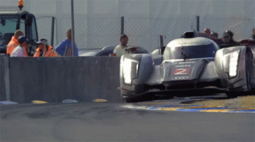
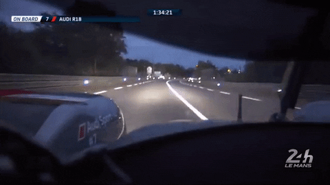
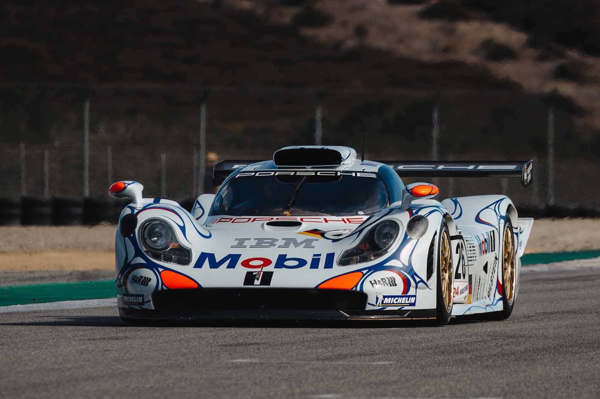
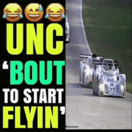

24 години Ле-Мана (фр. 24 Heures du Mans) — найстаріші та найпрестижніші у світі автомобільні перегони на витривалість, що проходять щорічно біля міста Ле-Ман у Франції. Входять до календаря Чемпіонату світу з перегонів на витривалість (WEC) як його головний етап.
Разом із Гран-прі Монако та Інді-500, ці перегони утворюють так звану «Потрійну корону автоспорту». Перемога в Ле-Мані вважається однією з найвищих нагород у кар'єрі будь-якого гонщика.
У перегонах беруть участь близько 60 (у 2019 році список був розширений до 62) автомобілів, що стартують одночасно.
Головне завдання команд — знайти баланс між швидкістю та надійністю техніки, щоб подолати якомога більшу дистанцію без критичних поломок. Адже переможцем стає той екіпаж, який за 24 години подолає найбільшу відстань.


Зародження (1923): Гонку започаткував Автомобільний клуб Заходу (ACO) як випробування для виробників. Метою було довести, що надійні спортивні машини можуть бути економними на дорогах загального користування.
Ера титанів (1950–1960-ті): Змагання перетворилися на арену жорстокої конкуренції між автогігантами. Найвідомішим протистоянням стала боротьба Ford та Ferrari у 1960-х, коли американці розробили легендарний Ford GT40, щоб перервати домінування італійців.
Технологічні революції: Ле-Ман став полігоном для передових технологій: у 1970-х тут масово з'явилися турбодвигуни, пізніше — гібридні установки та експериментальні прототипи, здатні розвивати швидкість понад 400 км/год на прямій Mulsanne.
Сучасність: Сьогодні перегони входять до календаря Чемпіонату світу з перегонів на витривалість (FIA WEC) і збирають понад 250 000 глядачів.

